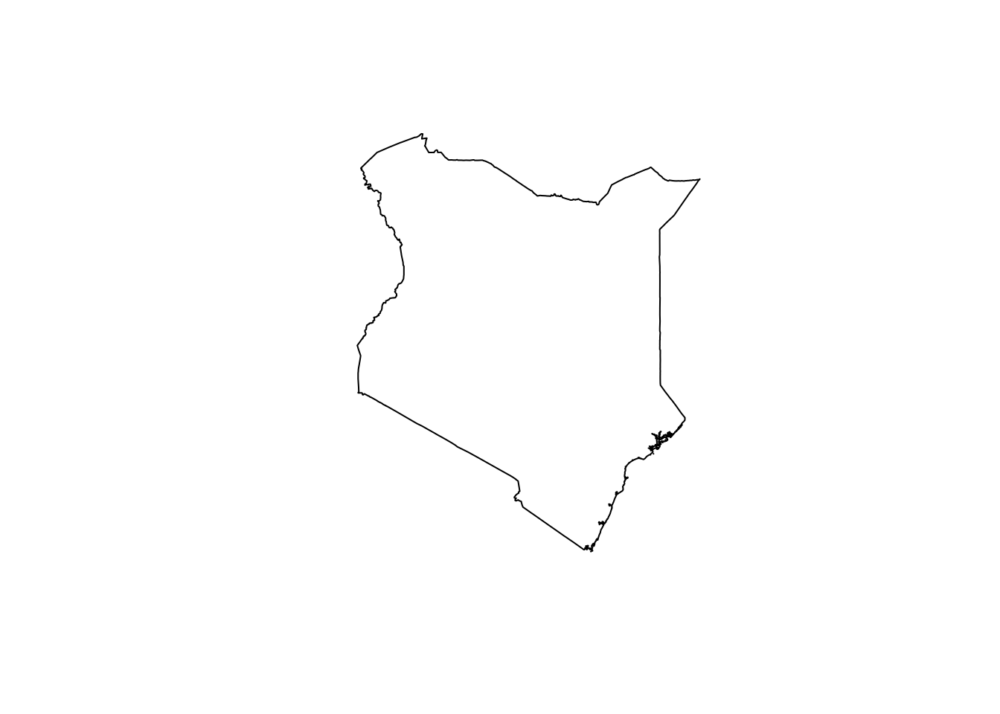

Lets use MODIS Gross Primary Productivity (GPP) and evaluate the relationship between violence against civilians and food productivity. GPP is a product from MODIS that was acquired from MOD17 data series products generated from Terra satellite. It is based on the radiation-use efficiency concept and can potentially be used to quantify generation of new biomass in vegetation and a proxy to food production (Kenduiywo, Ghosh, Hijmans, & Ndungu, 2020).
GPP 8-day composite is available at 500 m spatial resolution period with product names MOD17A2H and MYD17A2H in Terra and Aqua respectively (NASA, 2021). Let’s download the product which available from 2000.
if (!"luna" %in% installed.packages()){
remotes::install_github("rspatial/luna")
}
library(luna)
prod <- getProducts("^MOD17A2|^MYD17A2")
knitr::kable(table(head(prod, n=3)), align = 'l')| provider | concept_id | short_name | version | Freq |
|---|---|---|---|---|
| LPDAAC_ECS | C117500873-LPDAAC_ECS | MOD17A2 | 005 | 1 |
| LPDAAC_ECS | C117500875-LPDAAC_ECS | MOD17A2 | 005 | 0 |
| LPDAAC_ECS | C1218471156-LPDAAC_ECS | MOD17A2 | 005 | 0 |
| LPDAAC_ECS | C117500873-LPDAAC_ECS | MYD17A2 | 005 | 0 |
| LPDAAC_ECS | C117500875-LPDAAC_ECS | MYD17A2 | 005 | 1 |
| LPDAAC_ECS | C1218471156-LPDAAC_ECS | MYD17A2 | 005 | 0 |
| LPDAAC_ECS | C117500873-LPDAAC_ECS | MOD17A2 | V001 | 0 |
| LPDAAC_ECS | C117500875-LPDAAC_ECS | MOD17A2 | V001 | 0 |
| LPDAAC_ECS | C1218471156-LPDAAC_ECS | MOD17A2 | V001 | 1 |
| LPDAAC_ECS | C117500873-LPDAAC_ECS | MYD17A2 | V001 | 0 |
| LPDAAC_ECS | C117500875-LPDAAC_ECS | MYD17A2 | V001 | 0 |
| LPDAAC_ECS | C1218471156-LPDAAC_ECS | MYD17A2 | V001 | 0 |
We are almost ready to download the data. Let’s get Kenya’s country boundary and start data downloads.
if (!"raster" %in% installed.packages()){
install.packages("raster", dependencies = T)
}
library(raster)
aoi <- getData("GADM", country="KEN", level=0)
plot(aoi)
Define data parameters: product name, start and end date, and area of interest. We define date as follows:
start <- "2001-01-01"
end <- "2001-02-12"Thereafter, extract existing data files, this Terra GPP products.
product <- "MOD17A2H"
mf <- luna::getModis(product, start, end, aoi=aoi, download = FALSE)
length(mf)## [1] 28MODIS data can be download from EarthData. This requires specification of a storage directory, a user’s name and password. Here, the password is saved in a directory that we will read. For the sake of time it takes to donwload the data a demo is only done for 5 days data. Later Earth Engine will be used to process the data and code link shared for purposes of time constraints.
pass <- readRDS("earthdata.rds")
modis_path <- "/home/bkenduiywo/R/raw/"
dir.create(modis_path)## Warning in dir.create(modis_path): '/home/bkenduiywo/R/raw' already existsmstart <- "2001-01-01"
mend <- "2001-01-05"
luna::getModis(product, start, end, aoi=aoi, download=TRUE,
path=modis_path, username=pass$username,
password=pass$password)## [1] "/home/bkenduiywo/R/raw//MOD17A2H.A2000361.h22v09.006.2015141154842.hdf"
## [2] "/home/bkenduiywo/R/raw//MOD17A2H.A2000361.h21v09.006.2015141182536.hdf"
## [3] "/home/bkenduiywo/R/raw//MOD17A2H.A2000361.h22v08.006.2015141181629.hdf"
## [4] "/home/bkenduiywo/R/raw//MOD17A2H.A2000361.h21v08.006.2015141191018.hdf"
## [5] "/home/bkenduiywo/R/raw//MOD17A2H.A2001001.h22v09.006.2015141170304.hdf"
## [6] "/home/bkenduiywo/R/raw//MOD17A2H.A2001001.h22v08.006.2015141195519.hdf"
## [7] "/home/bkenduiywo/R/raw//MOD17A2H.A2001001.h21v09.006.2015141202001.hdf"
## [8] "/home/bkenduiywo/R/raw//MOD17A2H.A2001001.h21v08.006.2015141212155.hdf"
## [9] "/home/bkenduiywo/R/raw//MOD17A2H.A2001009.h22v09.006.2015141182447.hdf"
## [10] "/home/bkenduiywo/R/raw//MOD17A2H.A2001009.h22v08.006.2015141223236.hdf"
## [11] "/home/bkenduiywo/R/raw//MOD17A2H.A2001009.h21v09.006.2015141225226.hdf"
## [12] "/home/bkenduiywo/R/raw//MOD17A2H.A2001009.h21v08.006.2015141232158.hdf"
## [13] "/home/bkenduiywo/R/raw//MOD17A2H.A2001017.h22v09.006.2015141195502.hdf"
## [14] "/home/bkenduiywo/R/raw//MOD17A2H.A2001017.h22v08.006.2015142000254.hdf"
## [15] "/home/bkenduiywo/R/raw//MOD17A2H.A2001017.h21v09.006.2015142002329.hdf"
## [16] "/home/bkenduiywo/R/raw//MOD17A2H.A2001017.h21v08.006.2015142005341.hdf"
## [17] "/home/bkenduiywo/R/raw//MOD17A2H.A2001025.h22v09.006.2015141223324.hdf"
## [18] "/home/bkenduiywo/R/raw//MOD17A2H.A2001025.h22v08.006.2015142013343.hdf"
## [19] "/home/bkenduiywo/R/raw//MOD17A2H.A2001025.h21v09.006.2015142015354.hdf"
## [20] "/home/bkenduiywo/R/raw//MOD17A2H.A2001025.h21v08.006.2015142022436.hdf"
## [21] "/home/bkenduiywo/R/raw//MOD17A2H.A2001033.h22v09.006.2015142000220.hdf"
## [22] "/home/bkenduiywo/R/raw//MOD17A2H.A2001033.h22v08.006.2015142032648.hdf"
## [23] "/home/bkenduiywo/R/raw//MOD17A2H.A2001033.h21v09.006.2015142041223.hdf"
## [24] "/home/bkenduiywo/R/raw//MOD17A2H.A2001033.h21v08.006.2015142052633.hdf"
## [25] "/home/bkenduiywo/R/raw//MOD17A2H.A2001041.h22v09.006.2015142013327.hdf"
## [26] "/home/bkenduiywo/R/raw//MOD17A2H.A2001041.h22v08.006.2015142062100.hdf"
## [27] "/home/bkenduiywo/R/raw//MOD17A2H.A2001041.h21v09.006.2015142064808.hdf"
## [28] "/home/bkenduiywo/R/raw//MOD17A2H.A2001041.h21v08.006.2015142080324.hdf"Further, processing steps are available here. The steps are covered on Earth Engine to save on time those steps were done using as shown here.